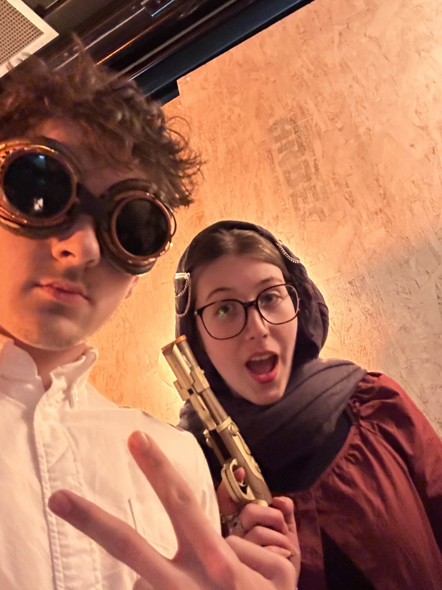
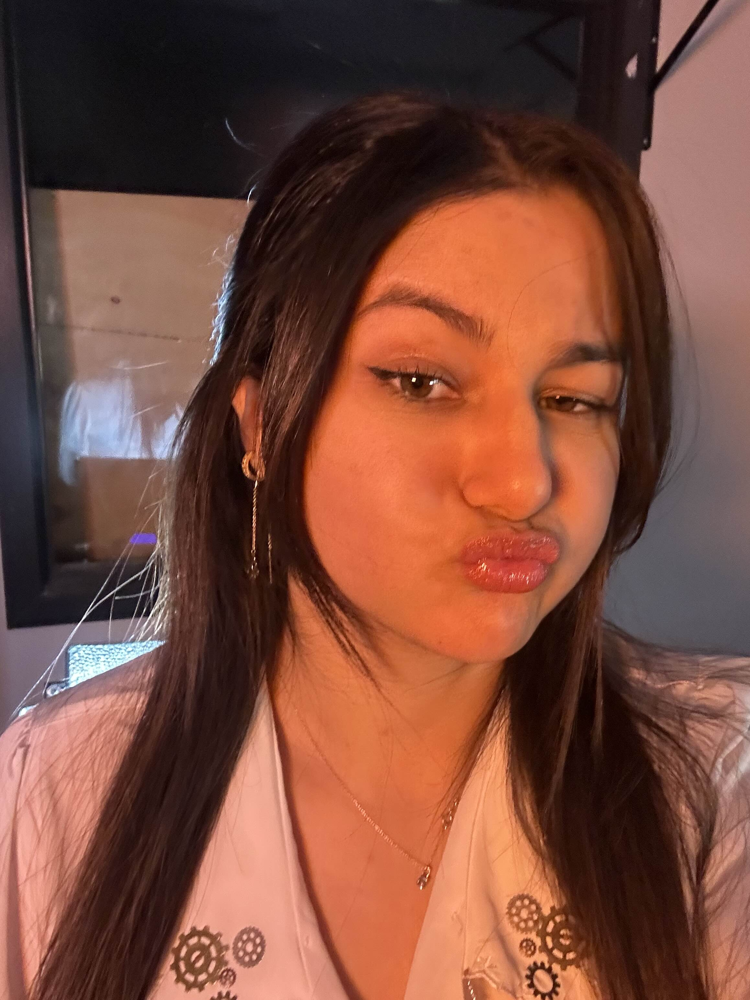
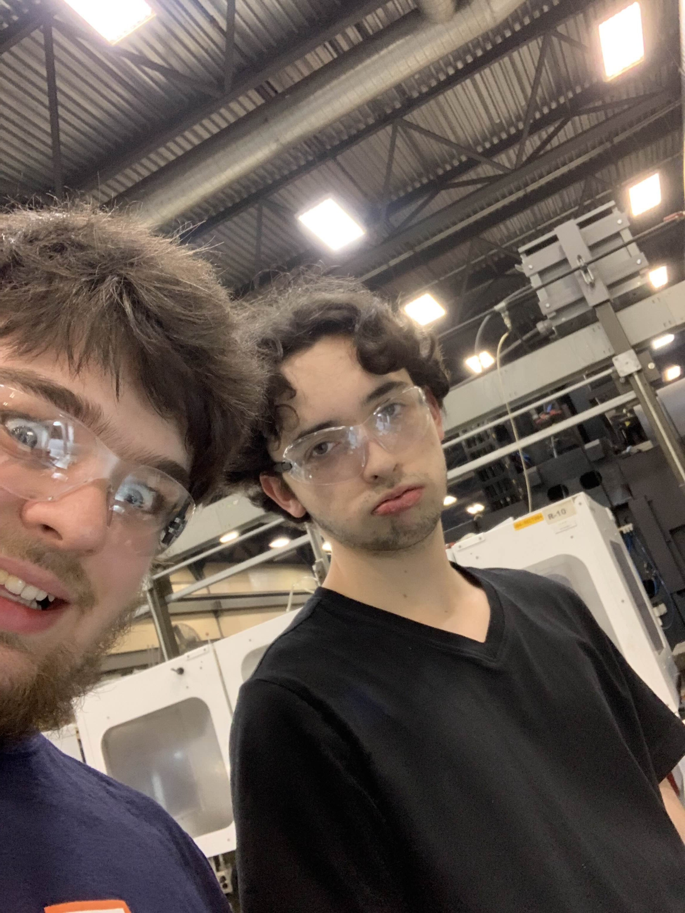
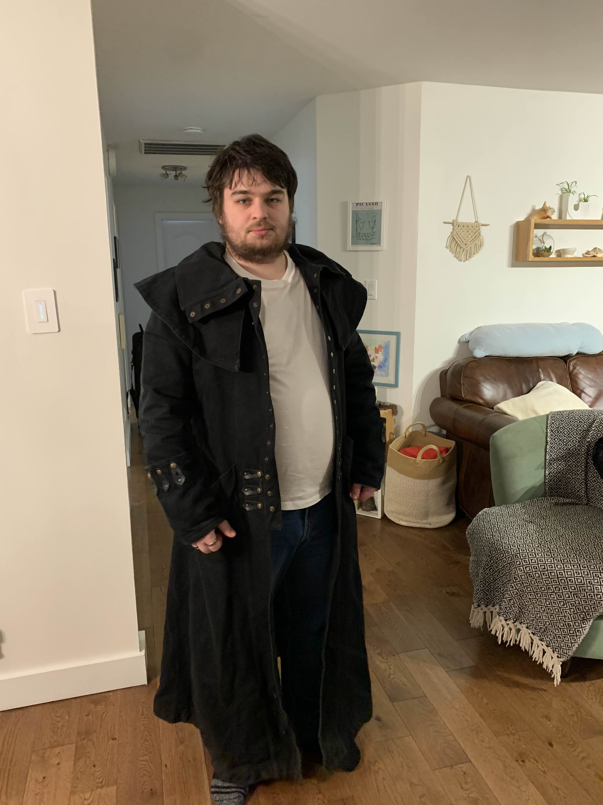
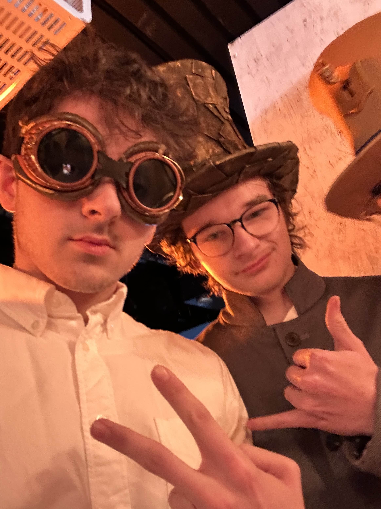
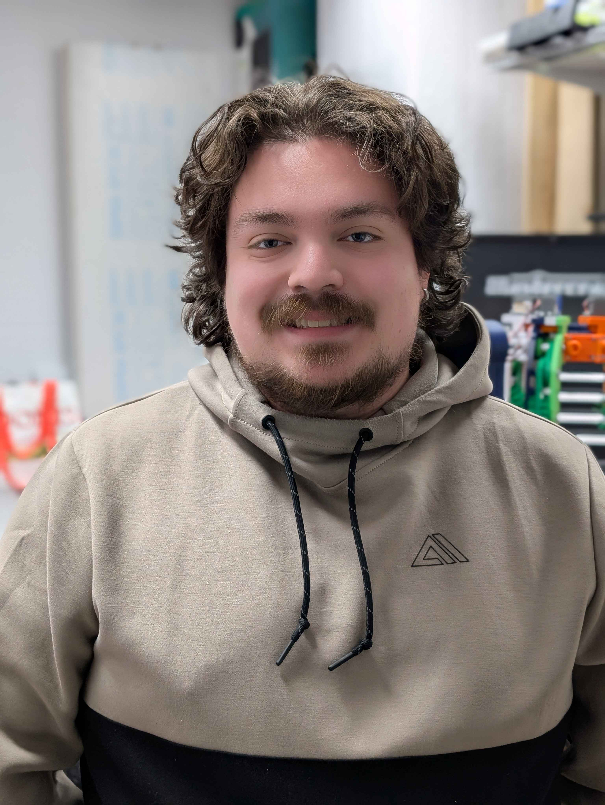
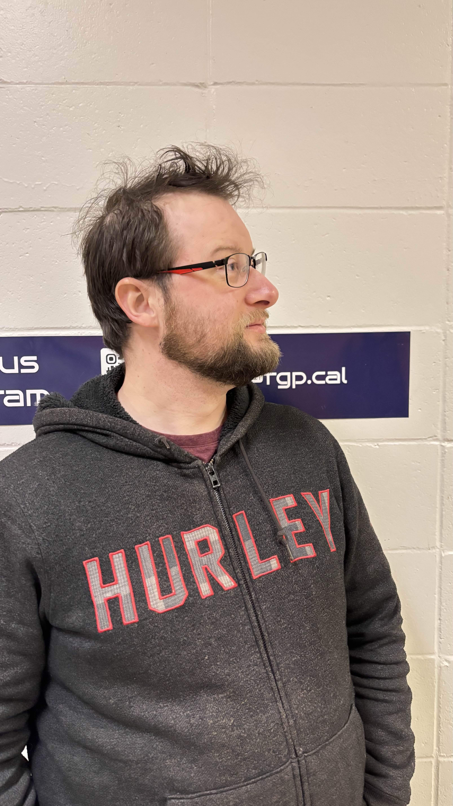
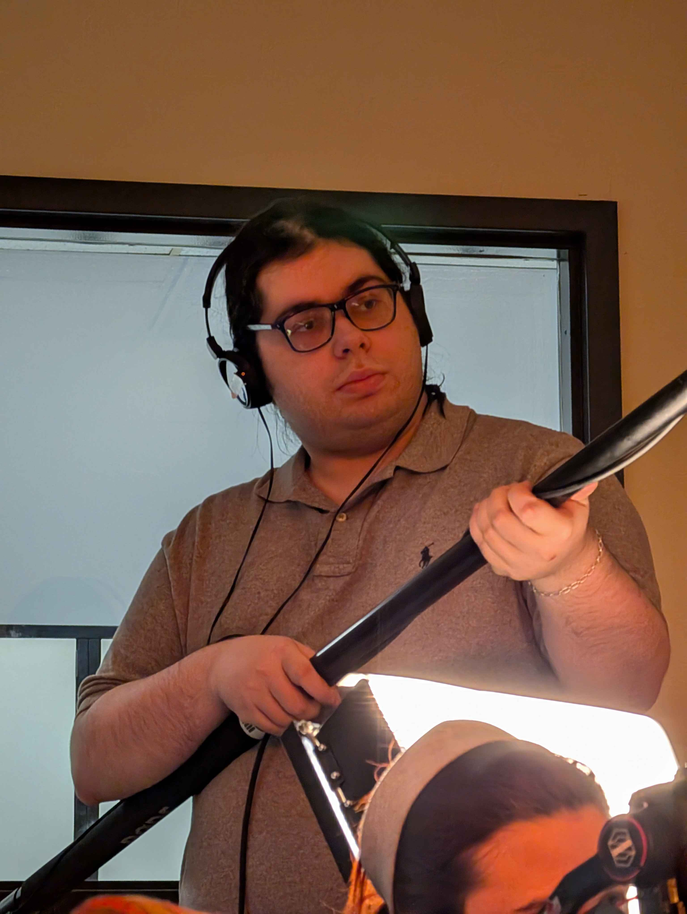

À propos
Pour commencer, voici notre équipe qui a travaillé de nombreuses heures et qui est
essentielle à la réussite de ce projet.
Sara
Sara est une personne très créative et qui s'exprime très bien mais qui semble parfois confuse à propos des cours offert par son programme d'étude.
Responsable kiosque, actrice, conceptrice de costume.
Félix

Félix est probablement une des personnes les plus compréhensives et patientes qui existe mais qui doit encore terrasser son ennemi no1 les mathématiques.
Programmeur, acteur, concepteur de costume.
Juliette
Juliette est une personne qui est toujours prête à aider quand c'est VRAIMENT nécessaire!
Contenu site web, conception kiosque.
Madjda
Madjda est une boule d'énergie et de positivité qui a participé à tous les projets impliquant de l'art.
Responsable des costumes, actrice, conception kiosque.
Liam
Liam est un acteur important de la CRC. Il a été indispensable à la création du robot et de la vidéo, toujours en gardant son sourire et sa bonne humeur.
Programmeur, robot, acteur.
Antoine
Antoine porte beaucoup d'attention aux détails et nous a tous surpris par son talent artistique.
Programmeur, robot, acteur, peintre, kiosque.
Guillaume
Guillaume est un travailleur qui s'est jeté corps et âme dans la création du robot et qui a offert beaucoup de ressources à la réussite de ce projet. Guillaume est quelqu'un de très fort malgré son combat contre le « 8% ».
Robot SwErVe Drive, acteur, financement, impression 3D, conception costume, acteur, tutoriel, contenu site web, conception kiosque.
Martin
Martin est le gestionnaire des projets et grâce à lui, ses troupes ont su garder en tête leurs objectifs ainsi que la vision commune de l'équipe.
Gestion des projets, tutoriel.
Laurent

Laurent est un travailleur qui nous a tous surpris par sa maîtrise de multiples domaines et est toujours prêt à rendre service aux personnes autour de lui.
Acteur, conception des costumes, assistant réalisateur.
Ana

Ana est une personne très créative, elle a montré à quel point elle était talentueuse dans le milieu du cinéma, aucun aspect de celui-ci ne lui échappe. Elle a réussi à rester les pieds sur terre malgré son imagination débordante.
Responsable officielle de la vidéo.
Simon

Simon est quelqu'un qui accomplit ses objectifs malgré les difficultés et quelqu'un doté d'une grande écoute toujours prête à conseiller les gens autour de lui. Des professionnels lui recommanderait quelques heures de sommeil de plus.
Programmeur, acteur.
Youssef

Youssef est une personne d'une extrême gentillesse, toujours sympathique et qui pense beaucoup aux autres. Il est sur la bonne voie pour gagner le concours de la personne étant restée au cégep le plus longtemps.
Robot, acteur, kiosque, costume, impression 3D / accessoires Steampunk.
Ray

Ray est une personne très artistique qui a apporté son aide dans la réalisation de ce projet.
Recherche financement, décors.
Laurence

Laurence est une personne très positive et de bonne humeur, qui a apporté son aide dans la réalisation du projet.
Robot.
Laurent
Laurent à participer à la programmation du robot. Vieille âme toujours prête à donner des conseils.
Programmation.
Nicolas
Nicolas a été essentiel dans la réalisation de la vidéo, avec Ana ils ont formé une équipe efficace et dynamique.
Perchiste.
Alexis

Alexis est quelqu'un qui se dévoue à 100% dans ses projets et qui fait preuve d'une grande autodérision. Alexis est quelqu'un de très inspirant même s'il devrait peut-être abandonner la décoration de notre local.
Co-responsable site web, acteur.
Kevin

Kevin est une personne très drôle qui sait tout pour donner le sourire aux gens autour de lui, il est une personne très polyvalente qui a participé à beaucoup de projets différents entourant la CRC.
Co-responsable site web / jeux, acteur, conception costume, financement, conception kiosque.
Qu'est-ce que la CRC?
La Compétition de Robotique CRC est un événement annuel où des équipes d'étudiants de niveau collégial conçoivent, fabriquent et programment un robot pour accomplir des tâches précises dans un jeu thématique. Cette compétition met à l'épreuve leurs compétences en ingénierie, en programmation et en travail d'équipe. Chaque année, un nouveau défi est présenté, inspiré de situations réelles ou futuristes. Les équipes doivent analyser les règles du jeu, concevoir un robot performant et élaborer des stratégies pour maximiser leurs points en match. Mais la CRC ne se limite pas à la robotique! En plus du robot, les participants doivent créer un kiosque thématique, réaliser une vidéo de présentation et développer un site web pour documenter leur projet. L'aspect entrepreneurial est aussi mis de l'avant avec la recherche de commandites et la gestion de projet. Au-delà de la compétition, la CRC favorise le développement de compétences techniques et interpersonnelles. Elle représente une opportunité unique de collaborer, d'innover et de relever des défis dans un esprit de camaraderie et de persévérance. En somme, la CRC est une expérience immersive qui prépare les étudiants au monde de l'ingénierie et des sciences, tout en leur permettant de vivre une aventure humaine et technologique passionnante!
Le Terrain de Jeu : Le terrain est une grande surface comportant neuf stations où les
robots peuvent déposer des anneaux. Ces stations sont disposées de manière à former une
grille de trois par trois, similaire à un plateau de morpion (tic-tac-toe).
Objectif du Jeu : Les équipes doivent utiliser leurs robots pour placer les anneaux
dans les stations du terrain. Lorsqu'une équipe contrôle trois stations alignées en
ligne, en colonne ou en diagonale, elle obtient un multiplicateur de points pour ces
stations, augmentant ainsi son score.
Règles Essentielles : Pour les zones de départs, les robots **commencent** dans l'une
des deux zones de départ qui leur est attribuées. Pour contrôler une station, les robots
doivent y placer des anneaux en respectant certaines conditions, les équipes doivent
être **les premiers** à mettre un **anneau** pour une des **zones**, et pour les autres
les équipes doivent **être** les derniers et/ou avoir la plus grande **dominance** de
cette section. Chaque match dure 5 minutes, durant lesquelles les équipes doivent
exécuter leurs stratégies pour marquer le maximum de points.
Compétences Développées : TAKTIK 2025 permet aux participants de développer diverses
compétences, notamment : Ingénierie et Conception : Concevoir et construire un robot
fonctionnel adapté aux défis du jeu. Programmation : Programmer le robot pour effectuer
des tâches autonomes ou répondre aux commandes des opérateurs. Stratégie : Élaborer des
plans pour contrôler les stations et optimiser le score. Travail d'Équipe : Collaborer
efficacement avec les coéquipiers pour atteindre les objectifs communs.
Conceptualisation du robot selon
les buts de la compétition.


Construction du robot.


Création du kiosque.


Création de la vidéo.


Les problèmes que nous avons rencontrer au cours des mois sont, :
Pour la conceptualisation du robot, on (à minuscule, car dans une phrase en milieu de
phrase) a décidé d’intégrer un swerve drive pour rendre
le robot ultra maniable, mais la programmation s’est avérée beaucoup plus compliquée que
prévu.
Chaque test nous a forcés à ajuster nos calculs et à peaufiner la synchronisation des
moteurs. Malgré les défis, nous savions que si nous y arrivions, notre robot aurait un
sérieux
avantage.
Pour la construction du robot, le lanceur a été conçu rapidement et fonctionnait bien
dès les premiers tests.
Par contre, intégrer tous les systèmes ensemble a été un vrai casse-tête, surtout avec
l’électronique et la communication entre les moteurs. Après des heures d’ajustements et
de tests, notre robot est enfin prêt à performer sur le terrain !
Pour le kiosque, le premier obstacle que nous avons rencontré était que nous ne
savions pas exactement à quoi il devait ressembler. Nous avons finalement opté pour un
comptoir principal ainsi que des murs sur lesquels nous allions accrocher de nombreux
accessoires steampunk. Nous avons ensuite dû transporter les panneaux servant à la
construction des murs dans un U-Haul.
Pour le reste, nous n’avons rencontré qu’un autre problème lors du rangement des
panneaux et du comptoir. Nous avions entreposé les murs dans une salle près de notre
local pendant la semaine de relâche, mais nous avons dû les déplacer devant notre local
avant la reprise des cours.
Et finalement, pour la vidéo, le plus gros obstacle que nous avons rencontré a été qu'il
nous manquait des acteurs ainsi que de l'équipement pour filmer. Heureusement, notre
bibliothèque nous a prêté du matériel de haute qualité, et les membres de notre comité
se sont prêtés à cœur joie à la mise en scène de la vidéo.
Aussi, avec le peu de temps que nous avions après la semaine de relâche, Ana a dû écrire
le script en deux semaines, le filmer en une semaine et monter la vidéo en 11 jours.
Comme vous avez pu le voir, la vidéo est incroyable et nous en sommes très fiers.
Voici le lien pour la vidéo officielle:
Voici le lien pour le tutoriel: